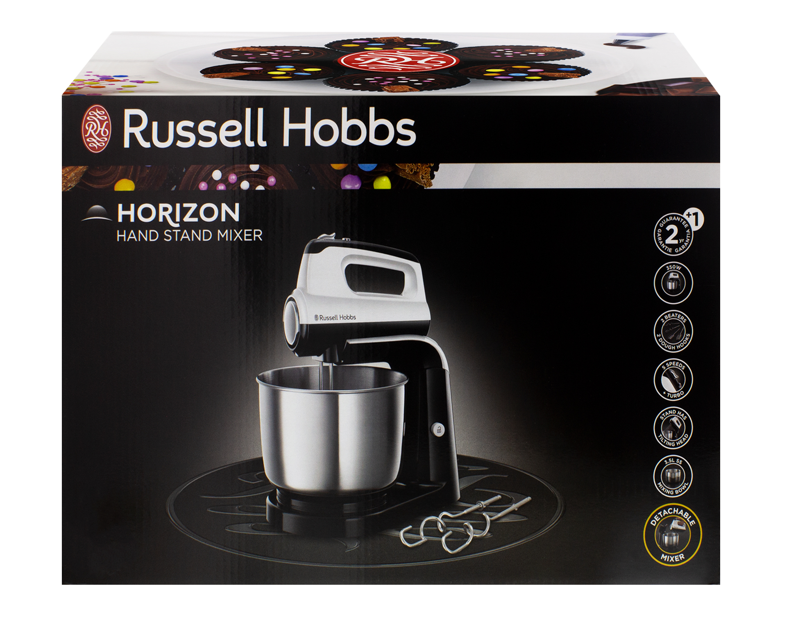

Welcome to Natürliche Gesundheit
Deutsch DAF hygiene Arbeitsblätter - Beliebteste AB (13 Results)
2020.12.21 18:36Deutsch Daf Arbeitsblatter Anmeldung Deutsch Daf Powerpoints Video-Lektionen Teaching jobs NEW Forum Registrieren Sie sich Mitglieder Hochladen Blog Advisory Committee Spende Englisch Deutsch Französisch Spanisch Russisch Portugiesisch MENU Anmeldung Neu anmelden Englisch Deutsch Französisch Spanisch Russisch Portugiesisch Daf Arbeitsblatter Daf Powerpoints Video-Lektionen Hochladen Erstellen Sie Video-Lektionen Arbeitsblatt hochladen Teaching jobs NEW Deutsch Daf Arbeitsblatter Hygiene
Deutsch DAF hygiene Arbeitsblätter - Beliebteste AB (13 Results)
Prev Next Sortieren nach: Beliebteste AB | Die meisten Favoriten | Neueste Zeitraum: Alles | Monatlich | Wöchentlich | Täglich Lena im Badezimmer Von mkhom Lesen _ Arbeitsblatt mit 5 Arbeitsaufträgen - zum Textverständnis - zum Wortschatztraining - mit 3 Grammatikübungen Wortschatz... 3,424 Downloads Badezimmer & Körperpflege 1 Von mkhom Arbeitsblatt - Bildwörterbuch - Übungsblatt Wortschatz: Nomen /Hygiene (16 Begriffe) Teil 1 von 4 Umfang: 3 Seiten Ich ho... 3,179 Downloads Körperpflege 1 Von mkhom Arbeitsblatt - Satzteile passend zusammenfügen (Dativ) - eigene Sätze schreiben (Wie oft...?) Passend zum Legematerial Formatier... 3,150 Downloads Badezimmer & Körperpflege 2 Von mkhom Arbeitsblatt - Bildwörterbuch - Übungsblatt Wortschatz: Nomen / Hygiene (16 Begriffe) Teil 2 von 4 Umfang: 3 Seiten Ich h... 2,624 Downloads Sara im Badezimmer Von mkhom Lesen _ Arbeitsblatt mit 5 Arbeitsaufträgen - zum Textverständnis - zum Wortschatztraining - mit 2 Grammatikübungen Wortschatz... 2,213 Downloads Körperpflege _ Legematerial zum Satzbau _ Dativ Von mkhom Legekärtchen - Sätze bilden - Bilder finden - Frage "Womit..." kann erarbeitet/ geübt werden - Dativ wird geübt Jede Karte wird ... 2,199 Downloads Körperpflege 2 Von mkhom Arbeitsblatt - zur Festigung des Wortschatzes - Begriffe werden erklärt und müssen zugeordnet werden - Leseverständnis Ich hoffe,... 1,969 Downloads Körperpflege 5 Von mkhom Arbeitsblatt - Wortschatztraining - Multiple-Choice-Verfahren Umfang: 2 Seiten (mit Lösung) Ich hoffe, es gefällt euch ; ) 1,815 Downloads Badezimmer & Körperpflege 3 Von mkhom Arbeitsblatt - Bildwörterbuch - Übungsblatt Wortschatz: Nomen / Hygiene (16 Begriffe) Teil 3 von 4 Umfang: 3 Seiten Ich h... 1,483 Downloads Körperpflege 3 Von mkhom Arbeitsblatt - Bilderrätsel mit Lückenwörtern - Gitterrätsel (schwierig, da in alle Richtungen) 16 Begriffe / Nomen Umfang: 2 Seite... 1,355 Downloads Badezimmer & Körperpflege 4 Von mkhom Arbeitsblatt - Bildwörterbuch - Übungsblatt Wortschatz: Nomen / Hygiene (16 Begriffe) Teil 4 von 4 Umfang: 3 Seiten Ich h... 1,268 Downloads Körperpflege 4 Von mkhom Arbeitsblatt - Wortschatztraining - Multiple-Choice-Verfahren Umfang: 2 Seiten (mit Lösung) Ich hoffe, es gefällt euch ; ) 1,182 Downloads Prev Next FAQ | Über uns | AGB | Deine Copyright-Lizenz | Facebook | Twitter | Google+ Du bist noch kein Mitglied. Möchtest du ein Mitglied von iSLCollective werden? ? Ok Cancel Du bist noch kein Mitglied. Gratuliere, auch du bist jetzt ein Mitglied. :) Bitte warten, die Seite wird aktualisiert! Ok Durch die Verwendung von iSLCollective.com stimmen Sie unserem Einsatz von Cookies zu. So können wir Ihre Erfahrungen verbessern. Mehr erfahren OK